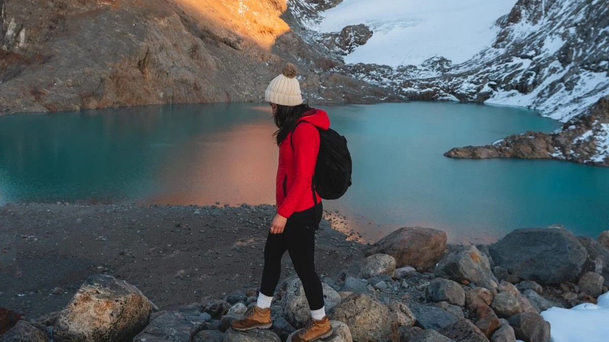

Cosas que hacer
Aventura y Naturaleza
Hacé trekking sobre el Glaciar Perito Moreno, navegá bajo las Cataratas del Iguazú o recorré el cerro Fitz Roy.
Hay rafting en Mendoza, parapente en Tucumán o esquí en los mejores centros invernales.

Cultura y Gastronomía
Sumergite en la cultura argentina. Disfrutá de un show de Tango en Buenos Aires o visitá estancias pampeanas.
Degustá el asado, probá empanadas salteñas y deleitate con los vinos de Mendoza.